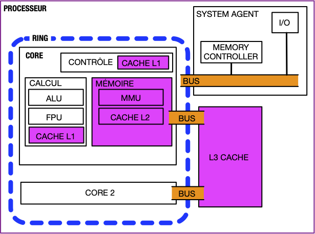

Processeur
Un processeur est composé de deux parties :
- les cores, liées entre eux par le ring (un bus de communication)
- le system agent
Certains processeurs possèdent également une carte graphique intégrée.

Ces deux éléments communiquent via un bus permettant de transmettre 64b en parallèle (parfois plus).
Chaque core est une unité de calcul dont le but est d'exécuter des instructions.
Les cores travaillent indépendamment mais nécessitent d'être au courant de ce que font les autres core pour que tout fonctionne :
TBD redécouper CPU ce qui précède.